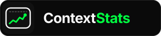
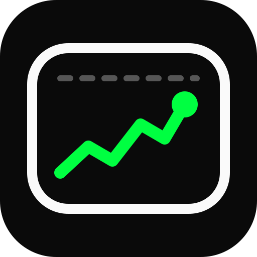

A live graph inside your context window. See how much context you've used and how close you are to the limit.
A rounded frame stands for the context window. Inside it, a sparkline traces token usage over a session, the same data the context-stats graph command plots. The dot marks where you are now, and the dashed line above it is the limit.
The base is near-black, the color of the terminal where the tool runs. Neon green is used only for the line and the live point, the one thing you need to see at a glance. It never fills a surface.
Inter Bold with tight tracking. Context is in near-white and Stats picks up the accent, so the two-part name scans in one glance.

logo-full.svg
logo-icon.svgNeon green is for lines, borders and text only. Never use it as a background. The status colors Danger #EF4444, Warning #F59E0B and Info #3B82F6 are for text only.
// tailwind.config.js theme: { extend: { colors: { brand: { bg: '#0A0A0A', surface: '#111111', border: '#262626', muted: '#A1A1A1', text: '#FAFAFA', accent: '#00FF41', // lines & text only }, }, fontFamily: { sans: ['Inter', 'system-ui', 'sans-serif'], }, }, }
assets/logo/ ├── logo-mark.svg # 64×64 canonical mark ├── logo-full.svg # 320×72 mark + wordmark ├── logo-wordmark.svg # 180×40 text only ├── logo-icon.svg # 512×512 app icon ├── favicon.svg # 16×16 simplified ├── logo-white.svg # mono, dark bg ├── logo-black.svg # mono, light bg └── brand-showcase.html <!-- favicon --> <link rel="icon" type="image/svg+xml" href="assets/logo/favicon.svg">